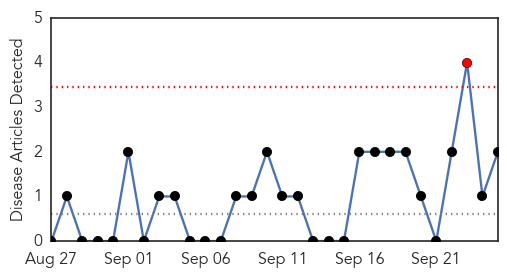

Influenza
30-Day Web Trend
10 alerts, 2 warnings

30-Day Twitter Trend
0 alerts, 0 warnings

Article Locations

Article Confidences
Top Articles:
- 0.992
- Maryland health officials confirm enterovirus D68 in state
- 0.965
- New Mexico sees first flu case of season
- 0.958
- Uni student comes down with meningococcal
- 0.955
- Nurses union sues to block proposed flu-shot mandate at Brigham and Women’s Hospital
- 0.925
- Stamford schools warn of flu risk in October
- 0.852
- BACH to start some flu vaccinations Monday
- 0.827
- Fight the flu with shot
- 0.809
- Several types of flu shots available to patients ahead of flu season
- 0.697
- Now one in seven patients cannot be cured using antibiotics after they were handed out too freely by GPs
- 0.617
- Ideal flu vaccine for seniors focus of US-funded research in Sudbury
Top Tweets:
-
No tweets found for Sep 25, 2014
Swine Flu
30-Day Web Trend
1 alerts, 0 warnings

30-Day Twitter Trend
0 alerts, 0 warnings

Article Locations
Article Confidences

Top Articles:
Top Tweets:
-
No tweets found for Sep 25, 2014